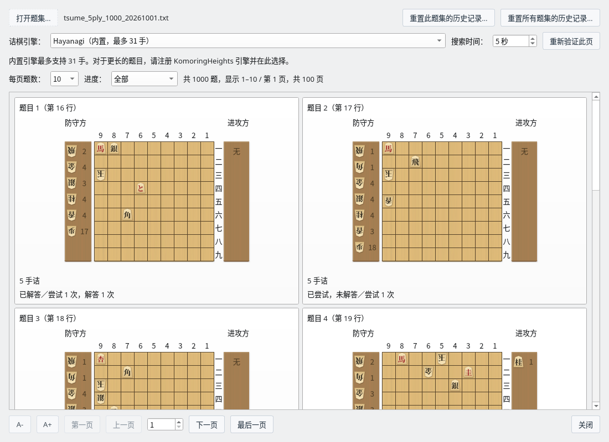
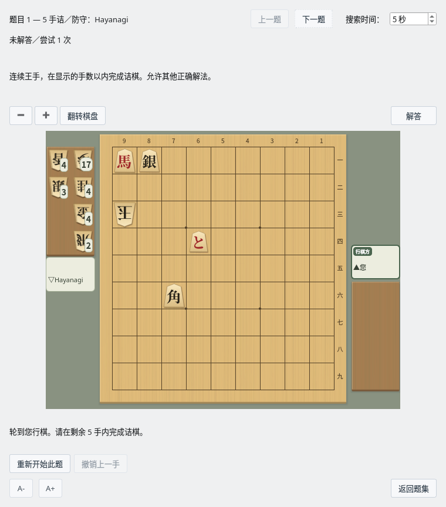
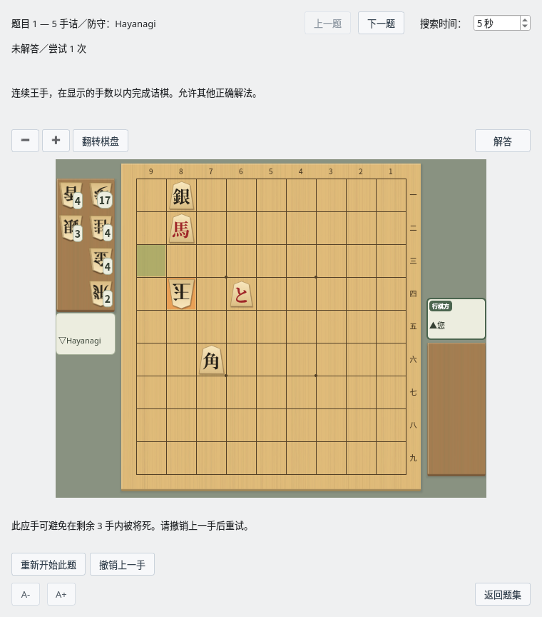
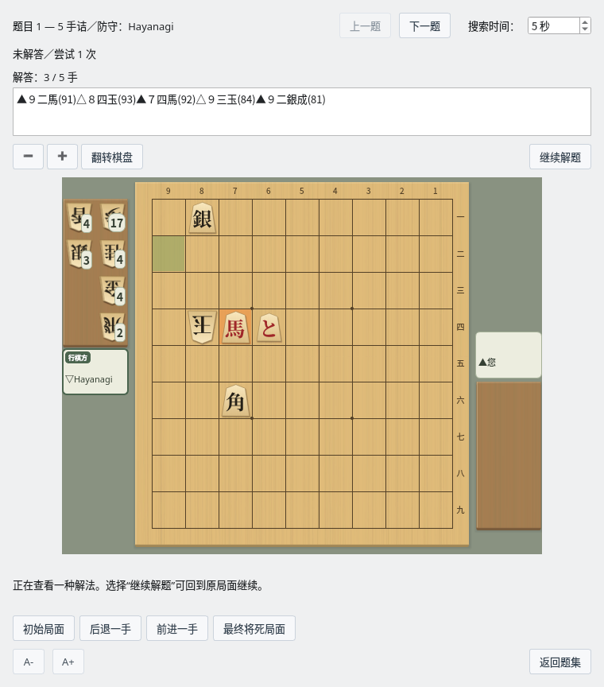

诘棋练习
选择题目，在棋盘上解题，并回顾解答
截图在 Linux 上以简体中文界面拍摄。
看着初始局面选择题目
题目很多时也可以按页浏览
打开题集
选择菜单“对局”→“练习诘棋…”，会打开“诘棋题集”。点击“打开题集…”，选择每行写有一个 SFEN 局面的文本文件。
可以使用诘棋局面生成器保存的题集。只含初始局面的文件和附有参考变化的文件都可以使用。诘棋手数采用已验证的分析结果，不会只根据文件名或参考变化的长度来决定。
所有支持的题集都可以更快地读取和获取历史记录，并重复利用分析结果。公开的 3～13 手诘、各 1000 题的题集，只要内容与应用中记录的已验证内容一致，首次打开时也会省略诘棋手数的确认搜索。改名或移动文件后仍然有效，编辑内容后会恢复为普通分析。点击“重新验证此页”会重新搜索。
下载题集
我们公开了 3、5、7、9、11、13 手诘的题集（各 1000 题，共 6000 题）。Linux 版 ZIP（ShogiBoardQ-linux.zip）的 data/tsumeshogi 文件夹中已附带。在其他环境中，请右键点击下面的链接保存文件。
| 手数 | 题数 | 文件 |
|---|---|---|
| 3 手诘 | 1000 题 | tsume_3ply_1000_20261001.txt（65 KB） |
| 5 手诘 | 1000 题 | tsume_5ply_1000_20261001.txt（75 KB） |
| 7 手诘 | 1000 题 | tsume_7ply_1000_20261001.txt（86 KB） |
| 9 手诘 | 1000 题 | tsume_9ply_1000_20261001.txt（97 KB） |
| 11 手诘 | 1000 题 | tsume_11ply_1000_20261001.txt（108 KB） |
| 13 手诘 | 1000 题 | tsume_13ply_1000_20261001.txt（120 KB） |
均为 2026 年 10 月 1 日版（增加了持驹剩余检查并替换题目的新版），是 UTF-8 文本文件。制作和验证的详情请参阅题集说明（README，日文）。
查看初始局面、手数和历史记录
每道题的卡片上显示初始棋盘和持驹、题号、诘棋手数以及尝试状况。每页题数可从 10、20、50、100 中选择。可以用“上一页”“下一页”或页码移动，即使是 1000 题的题集也能分批挑选。
可以按“全部”“未尝试”“已尝试，未解答”“已解答”筛选，找到想练习的题目。点击题目的卡片即可进入练习画面。

题集：看着初始局面和诘棋手数选择要挑战的题目（5 手诘题集）
选择诘棋引擎和搜索时间
使用内置的 Hayanagi 无需额外注册引擎。初始局面的诘棋判定最多 31 手。对于长手数的题目，请另行准备 komori-n 开发并公开的诘棋引擎KomoringHeights，在“设置”→“引擎设置…”中注册，然后在题集画面的“诘棋引擎”中选择。注册方法请参阅引擎注册指南。
即使选择 KomoringHeights，作为防守方下应手的仍是 Hayanagi。KomoringHeights 用于判定是否能将死。也可以使用 101 手等长手数的题目，但需要在限定时间内完成判定。
“搜索时间”可设定为 1～600 秒。如果因超时等原因显示“未确定”，请增加时间后点击“重新验证此页”。已确认无诘的题目无法开始练习。
以 Hayanagi 为防守方在棋盘上解题
连续王手，在显示的手数以内将死
移动攻方的棋子
由您担任攻方。依次点击棋子和目标位置，或拖动棋子来走子。也可以打入持驹，并选择升变或不升变。走出正确的王手后，防守方会下应手，然后又轮到您。
判定的依据不只是是否与参考变化一致，而是能否在显示的剩余手数以内将死。成立的其他解法也会被视为正确。

练习画面：您是攻方，Hayanagi 是防守方。一边确认剩余手数一边走子
看到防守方的逃脱应手后重新思考
如果走出无法将死的王手，防守方会在棋盘上下出防止将死的应手。为了让您看清应手，约 1 秒后才显示结果。会区分“完全无法将死”和“剩余手数以内无法将死”两种情况。
点击“撤销上一手”可回到自己上一步之前，尝试别的着法。不是王手的着法和犯规着法不会被接受。搜索超时时不会判为错误，可以点击“重试搜索”重新验证。

确认逃脱应手和判定结果，撤销一手后再挑战
| 操作 | 作用 |
|---|---|
| 重新开始此题 | 回到初始局面，开始新的尝试。 |
| 撤销上一手 | 回到自己上一步之前的局面。 |
| 停止搜索・重试搜索 | 搜索中显示“停止搜索”，可以重新判定时显示“重试搜索”。也可以增加搜索时间后再验证。 |
| 上一题・下一题 | 不返回题集，按筛选后的顺序移动到相邻的题目。在练习画面中修改的搜索时间会沿用。 |
| 返回题集 | 回到题集原来的页面和筛选条件。 |
逐手回放解答
确认解法后，可以回到中途的练习
点击“解答”按钮，棋盘上方的说明文字会变为棋谱和回放手数，棋盘下方的“重新开始此题”“撤销上一手”会切换为回放按钮。点击与“解答”同一位置的“继续解题”即可恢复练习。切换前后棋盘和共通按钮的位置不变。可以从初始局面查看一种经过验证的解法，较长的棋谱可以滚动阅读，也可以复制。

解答：对照棋谱和棋盘，逐手回放攻方和防守方的着法
| 回放按钮 | 操作 |
|---|---|
| 初始局面 | 显示解答的初始局面。 |
| 后退一手・前进一手 | 逐手后退或前进攻方、防守方的着法。 |
| 最终将死局面 | 显示解答最后的局面。 |
| 继续解题 | 隐藏棋谱和回放按钮，从回放前的练习局面继续。 |
回放期间只能查看棋盘，不能走子推进练习。仅回放不会增加尝试次数和解答次数。获取解答需要时间时，可以用“停止搜索”或“继续解题”中断。
保留尝试历史，反复练习
未尝试的题目和以前解过的题目都能找到
- 保存尝试次数、解答次数、上次尝试时间和上次解答时间。关闭应用后历史记录仍会保留。
- 只是浏览题集或等待自动判定不会增加尝试次数。进入练习画面并可以走子时，记为一次尝试。
- 重新挑战以前解答过的题目时，即使失败或中断，过去的已解答状态也会保留。
- 只要是同一局面，即使文件名或保存位置改变，历史记录也会沿用。
- 点击题集上方的“重置此题集的历史记录…”，可将当前题集的全部题目恢复为未尝试。与页面和筛选条件无关，全部题目都是对象。同一局面也出现在其他题集中时，共享的历史记录也会被重置。
- 点击“重置所有题集的历史记录…”，可将以前打开过的所有题集恢复为未尝试。两种重置都会显示确认画面，并删除尝试、解答次数和时间。重置无法撤销。
历史记录保存在与 ShogiBoardQ 设置文件不同的数据库中。发布版无需另外安装 SQLite 即可保存历史记录。